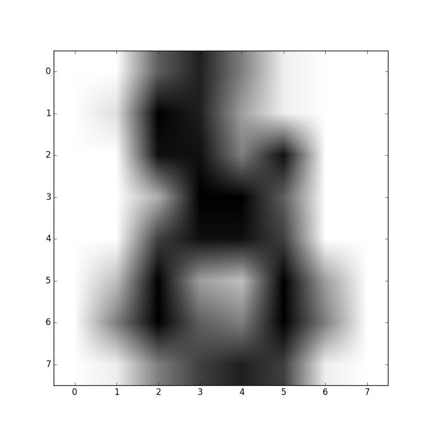

4. 概要¶
Python言語で役に立ったこと、つまったことについてまとめます。ライブラリの簡単な使い方などについてもまとめました。 ディープラーニングで使うNumpyや文字列処理についてもまとめてあるので、確認しながら仕様してください。明記していない限りはPython3での使用でまとめています。
6. Anaconda¶
6.1. Command Flow¶
Anacondaのコマンドは基本condaで行う。:
仮想環境を作成(virtualenvみたいな)
conda create -n my_env numpy scipy
仮想環境の一覧を表示
conda info e
仮想環境を有効化
activate my_env # Windows
source activate my_env # Linux/Mac
仮想環境に追加でインストール(バージョンを指定する場合 conda install scipy=0.12.0など)
conda install scikit-learn
condaで取得できないものについて、pipでインストール（pipを入れて対応）
conda install pip
pip install Flask
condaでインストールしたライブラリを書き出し
conda list --export > conda_requirements.txt
インストールしたパッケージのアップデート (conda自身はconda update conda)
conda update numpy
仮想環境無効化
deactivate # Windows
source deactivate # Linux/Mac
ファイルから仮想環境を作成
conda create -n my_new_env --file conda_requirement.txt
6.2. OpenCV Insatall¶
conda install -c https://conda.binstar.org/menpo opencv3
7. Sphinx¶
7.1. 数式コマンド¶
ベクトル(太字)¶
数式中でのベクトルは太文字の斜体にする必要がある。簡単に太文字にするには bm を使用する。
.. math::
\bm{A}
使うときに上記のみでダメだった場合には、preambleに
\usepackage{bm}
と、bmパッケージの宣言を追加する必要がある。
大きい括弧¶
括弧中に分数を入れるときは、高さのある括弧が必要になる。以下のコマンドで数式を囲むと式の高さに応じて、括弧の高さが変わる。
\left( \right)
\left{ \right\}
\left[ \right]
中括弧{}のみ、各個の前にバックスラッシュが必要なので、注意する。開き括弧、閉じ括弧のどちらかのみ使いたい時はlrft.もしくはright.を使う。閉じ括弧だけの時の例
\left( \right.
8. dlib Selective Search¶
dlibのインストールとselective searchについて説明する。まずはdlibをダウンロードする。 http://dlib.net/ 解凍したフォルダで、var18.18からは
python setup.py install
でインストールが出来る。サンプルコードはこちら
import dlib
from skimage import io
image_file = 'image.jpg'
img = io.imread(image_file)
# Locations of candidate objects will be saved into rects
rects = []
dlib.find_candidate_object_locations(img, rects, min_size=1000)
win = dlib.image_window()
win.set_image(img)
for k, d in enumerate(rects):
print("Detection {}: Left: {} Top: {} Right: {} Bottom: {}".format(
k, d.left(), d.top(), d.right(), d.bottom()))
win.add_overlay(d)
dlib.hit_enter_to_continue()
opencvとの連携では
mport dlib
from skimage import io
import cv2
image_file = '../examples/faces/2009_004587.jpg'
dlib_img = io.imread(image_file)
# Locations of candidate objects will be saved into rects
rects = []
dlib.find_candidate_object_locations(dlib_img, rects, min_size=500)
cv_img = cv2.imread(image_file)
for index, d in enumerate(rects):
print("Detection {}: Left: {} Top: {} Right: {} Bottom: {}".format(
index, d.left(), d.top(), d.right(), d.bottom()))
cv2.imwrite('candidate'+str(index)+'.jpg', cv_img[d.top():d.bottom(), d.left():d.right()])
9. MeCab & word2vec¶
9.1. 分かち¶
MeCabのインストール方法ついてはLinuxのほうで示す。まずは分かちから行う。 出力フォーマットについてはこちら→ https://taku910.github.io/mecab/format.html
# -*- coding: utf-8 -*-
import MeCab
import sys
tagger = MeCab.Tagger('-F\s%f[6] -U\s%m -E\\n')
fi = open(sys.argv[1], 'r')
fo = open(sys.argv[2], 'w')
line = fi.readline()
while line:
result = tagger.parse(line)
fo.write(result[1:]) # skip first \s
line = fi.readline()
fi.close()
fo.close()
スクリプトをwakati.pyとして、ikinokozo.txtに大して実行する。分かちのデータはikinokozo_wakati.txtとする。
$ python wakati.py ikinokozo.txt ikinokozo_wakati.txt
9.2. word2vec¶
分かち書きできたので、word2vecを行う。ベクトルの次元数は100、skip-gramモデルを用いて、階層的ソフトマックスで 学習させる。ネガティブサンプリングはないとする。 ちなみに、インターネット上にある word2vec を試してみました的なエントリのいくつかでは、 text8 以外のコーパスを読み込むときにも word2vec.Text8Corpus を使っているみたいだけれど、 word2vec.LineSentence を使って文ごとに読み込まないと、文と文の間で文脈がごちゃごちゃになってしまうような気がするので、今回は後者を採用する。
# -*- coding: utf-8 -*-
from gensim.models import word2vec
import logging
import sys
logging.basicConfig(format='%(asctime)s : %(levelname)s : %(message)s', level=logging.INFO)
sentences = word2vec.LineSentence(sys.argv[1])
model = word2vec.Word2Vec(sentences, sg=1, size=100, min_count=1, window=10, hs=1, negative=0)
model.save(sys.argv[2])
このスクリプトをtrain.pyとして保存して、ikinokozo_wakati.txtに対して実行する。学習結果として生成されるmodelは はikinokozo.modelとして保存する。
$ python train.py ikinokozo_wakati.txt ikinokozo.model
gensimのword2cecの学習部分のコードにはPython実装とCython実装があり、デフォルトでCython実装の方が使われる。 Cython実装では、GILをリリースして並列化されているので、Python実装に比べるとかなり早い。
word2vecの結果を確認する。とりあえず指定した単語とコサイン類似度の高い単語をリストアップするスクリプトを 描いて実行する。
# -*- coding: utf-8 -*-
from gensim.models import word2vec
import sys
model = word2vec.Word2Vec.load(sys.argv[1])
results = model.most_similar(positive=sys.argv[2], topn=10)
for result in results:
print(result[0], '\t', result[1])
実行は
$ python similars.py ikinokozo.py いき
10. Numpy¶
PythonでNumpyを利用するには、インポートする。
>>> import numpy as np
10.1. 配列の生成¶
配列のデータ構造はarrayである。要素が1,2,3,4,5となっている配列は、以下のように作成する。
>>> np.array([1,2,3,4,5])
array([1,2,3,4,5])
要素のリストを渡す。要素が0,1,2,3....,9となっている配列は以下のように作成する。
>>> np.array(range(10))
array([0,1,2,3,4,5,6,7,8,9])
>>> np.arange(10)
array([0,1,2,3,4,5,6,7,8,9])
2x3の配列（2行3列の行列）は以下のように作成する。行のリストを要素としたリストを渡す。
>>> np.array([[0,1,2],[3,4,5]])
array([[0,1,2],
[3.4,5]])
配列の形を変えたいときはreshapeを使う。これは1次元の配列を2x3に変えた。変更前の元になる配列は1次元である必要はない。
>>> a = np.array(6).reshape(2,3)
>>> a
array([[0,1,2],
[3,4,5]])
>>> a.reshape(3,2)
array([[0,1],
[2,3],
[4,5]])
また、変更先の配列は3次元以上でもよい。
>>> np.arange(27).reshape(3,3,3)
array([[[ 0, 1, 2],
[ 3, 4, 5],
[ 6, 7, 8]],
[[ 9, 10, 11],
[12, 13, 14],
[15, 16, 17]],
>>> import numpy as np
10.2. 配列の生成¶
配列のデータ構造はarrayである。要素が1,2,3,4,5となっている配列は、以下のように作成する。
>>> np.array([1,2,3,4,5])
array([1,2,3,4,5])
要素のリストを渡す。要素が0,1,2,3....,9となっている配列は以下のように作成する。
>>> np.array(range(10))
array([0,1,2,3,4,5,6,7,8,9])
>>> np.arange(10)
array([0,1,2,3,4,5,6,7,8,9])
2x3の配列（2行3列の行列）は以下のように作成する。行のリストを要素としたリストを渡す。
>>> np.array([[0,1,2],[3,4,5]])
array([[0,1,2],
[3.4,5]])
配列の形を変えたいときはreshapeを使う。これは1次元の配列を2x3に変えた。変更前の元になる配列は1次元である必要はない。
>>> a = np.array(6).reshape(2,3)
>>> a
array([[0,1,2],
[3,4,5]])
>>> a.reshape(3,2)
array([[0,1],
[2,3],
[4,5]])
また、変更先の配列は3次元以上でもよい。
>>> np.arange(27).reshape(3,3,3)
array([[[ 0, 1, 2],
[ 3, 4, 5],
[ 6, 7, 8]],
[[ 9, 10, 11],
[12, 13, 14],
[15, 16, 17]],
[[18, 19, 20],
[21, 22, 23],
[24, 25, 26]]])
配列の形を知りたいときはshapeを、配列の要素数だけを知りたいときはsizeを使う。
>>> a = np.arange(60).reshape(10,6)
>>> a.shape
(10, 6)
>>> a.size
60
行列の行数や列数はshapeから切り出せる。
>>> nrow, ncol = a.shape # 行数、列数の取り出し
以上のことだけでも配列のせいせいは可能だが、効率的にするために以下の関数も使った方がいい。
# 0.0(実数)が5個ある配列
>>> np.zeros(5)
array([ 0., 0., 0., 0., 0.])
# 1.0(実数)が5個ある配列
>>> np.ones(5)
array([ 1., 1., 1., 1., 1.])
0.0や1.0で初期化しないで、単に指定の大きさの配列だけを生成する場合は、emptyを使う。
>>> np.empty(5)
array([ 0., 0., 0., 0., 0.])
乱数の配列も必要な場合、例えば標準正規分布から5つの乱数を要素とした配列を生成する。
>>> np.random.randn(5)
array([-1.40144099, 1.09067656, -0.52752765, 1.54814761, 0.6271807 ])
randnの部分がぶんぷである。2項分布ならbinomial,ポアソン分布ならpoissonといった風に使う。通常は一様分布uniformと正規分布normalだけで十分である。
# 区間(0,1)の一様分布に従う乱数を3個生成
>>> np.random.uniform(0,1,3)
array([ 0.0857046 , 0.60963022, 0.57003425])
# 平均1.5 標準偏差2の正規分布に従う乱数を3つ生成
>>> np.random.normal(1.5,2.0,3)
array([ 4.70092781, 3.4016243 , 1.29292617])
配列の要素をシャッフルした配列を作る場合。
>>> np.random.permutation(range(6))
array([1, 0, 3, 2, 5, 4])
>>> np.random.permutation(6)
array([0, 3, 5, 2, 1, 4])
同じような方法として、shuffleもあるが、これは配列を破壊的に並び替えるので、通常はpermutationを使う方が安全である。 単位行列の作り方は、
>>> np.identity(5)
array([[ 1., 0., 0., 0., 0.],
[ 0., 1., 0., 0., 0.],
[ 0., 0., 1., 0., 0.],
[ 0., 0., 0., 1., 0.],
[ 0., 0., 0., 0., 1.]])
10.3. 配列の加工¶
aとbを2x3の配列とする。aの右をbに連結させて2x6の配列を作るにはhstack、aの下にbを連結させて4x3の配列を作るにはvstackを使う。
>>> a = np.arange(6).reshape(2,3)
>>> a
array([[0, 1, 2],
[3, 4, 5]])
>>> b = np.arange(6,12).reshape(2,3)
>>> b
array([[ 6, 7, 8],
[ 9, 10, 11]])
>>> np.hstack([a,b])
array([[ 0, 1, 2, 6, 7, 8],
[ 3, 4, 5, 9, 10, 11]])
>>> np.vstack([a,b])
array([[ 0, 1, 2],
[ 3, 4, 5],
[ 6, 7, 8],
[ 9, 10, 11]])
2次元の配列のある行や列を取り除いた配列の生成や、逆に取り除いた配列や、取り除く行や列からなる配列を作る操作は重要である。リストのスライスの操作の例として、5x6の配列から 2行目と4行目を取り除いた3x6の配列を作る。
>>> a = np.arange(30).reshape(5,6)
>>> a
array([[ 0, 1, 2, 3, 4, 5],
[ 6, 7, 8, 9, 10, 11],
[12, 13, 14, 15, 16, 17],
[18, 19, 20, 21, 22, 23],
[24, 25, 26, 27, 28, 29]])
>>> a[[0,2,4],:]
array([[ 0, 1, 2, 3, 4, 5],
[12, 13, 14, 15, 16, 17],
[24, 25, 26, 27, 28, 29]])
2列目と4列目を取り除いた5x4の配列を作る場合、逆に2列目と4列目からなる5x2の配列を作るには、[1,3]になる。
>>> a[:,[0,2,4,5]]
array([[ 0, 2, 4, 5],
[ 6, 8, 10, 11],
[12, 14, 16, 17],
[18, 20, 22, 23],
[24, 26, 28, 29]])
>>> a[:,[1,3]]
array([[ 1, 3],
[ 7, 9],
[13, 15],
[19, 21],
[25, 27]])
ある条件にあった値を別の値に置き換える場合は以下のようにする。ここでは偶数の値を-1に置き換えている。
>>> a[a % 2 == 0 ] = -1
>>> a
array([[-1, 1, -1, 3, -1, 5],
[-1, 7, -1, 9, -1, 11],
[-1, 13, -1, 15, -1, 17],
[-1, 19, -1, 21, -1, 23],
[-1, 25, -1, 27, -1, 29]])
配列のコピーは通常ポインターのコピーなので、コピー先の配列を変更すると、もとの配列も変更されてしまう。
>>> a = np.arange(6).reshape(2,3)
>>> a
array([[0, 1, 2],
[3, 4, 5]])
>>> b = a
>>> b[0,1] = 6
>>> b
array([[0, 6, 2],
[3, 4, 5]])
>>> a
array([[0, 6, 2],
[3, 4, 5]])
ポインターのコピーではなく、実体をコピーするにはcopyを使う。
>>> a = np.arange(6).reshape(2,3)
>>> b1 = a.copy() # 実体をコピー
>>> b2 = np.copy(a) # これも実体をコピー
>>> b1[0,1] = 6
>>> b2[0,1] = 6
>>> a # コピー元の配列は変更されていない。
array([[0, 1, 2],
[3, 4, 5]])
10.4. 配列に対する演算¶
配列に対して数値に関する演算を適用させると、配列内全ての数値にその演算が適用されることに注意する。 これはベクトルの演算と同じである。ただし、演算はmathで定義されているものではなく、Numpyで定義されている演算である必要がある。
>>> a = np.arange(1,7).reshape(2,3)
>>> a
array([[1, 2, 3],
[4, 5, 6]])
>>> a + 1 # 四則演算はそのままできる
array([[2, 3, 4],
[5, 6, 7]])
>>> a ** 2 # 2乗もできる
array([[ 1, 4, 9],
[16, 25, 36]])
>>> np.log(a) # logはmath.logではなく、np.log
array([[ 0. , 0.69314718, 1.09861229],
[ 1.38629436, 1.60943791, 1.79175947]])
数値の集合(ベクトル)に対する演算は、配列の全要素に対するものになる。1次元配列（ベクトル）として考える。
>>> np.sum(a)
21
>>> np.mean(a)
3.5
軸を固定して演算することも可能である。2次元の場合、「軸を固定する」とは、行あるいは列ごとに演算することに対応する。axis=0をつけると列ごとに、axis=1を付けると行ごとに演算する。
>>> np.sum(a,axis=0)
array([5, 7, 9])
>>> np.sum(a,axis=1)
array([ 6, 15])
行列に対する演算について示す。サイズが同じ行列の四則演算は要素ごとに行われる。
>>> a = np.arange(6).reshape(2,3)
>>> a
array([[0, 1, 2],
[3, 4, 5]])
>>> b = np.arange(6,12).reshape(2,3)
>>> b
array([[ 6, 7, 8],
[ 9, 10, 11]])
>>> a + b
array([[ 6, 8, 10],
[12, 14, 16]])
>>> a - b
array([[-6, -6, -6],
[-6, -6, -6]])
>>> a * b
array([[ 0, 7, 16],
[27, 40, 55]])
>>> a / b
array([[ 0. , 0.14285714, 0.25 ],
[ 0.33333333, 0.4 , 0.45454545]])
行列の積の計算について示す。ベクトルに対しては内積になる。
>>> a = np.arange(4)
>>> a
array([0, 1, 2, 3])
>>> b = np.arange(4,8)
>>> b
array([4, 5, 6, 7])
>>> a.dot(b)
38
>>> a = np.arange(6).reshape(2,3)
>>> a
array([[0, 1, 2],
[3, 4, 5]])
>>> b = np.arange(6).reshape(3,2)
>>> a.dot(b)
array([[10, 13],
[28, 40]])
行列の演算に関しては、逆行列、転置行列、行列式、固有値が重要である。
>>> a = np.array([[0,6,3],[-2,7,2],[0,0,3]])
>>> a
array([[ 0, 6, 3],
[-2, 7, 2],
[ 0, 0, 3]])
>>> a.T # 転置行列
array([[ 0, -2, 0],
[ 6, 7, 0],
[ 3, 2, 3]])
>>> np.linalg.det(a) # 行列式
36.0 # 0でないので逆行列がある
>>> np.linalg.inv(a) # 逆行列
array([[ 0.58333333, -0.5 , -0.25 ],
[ 0.16666667, 0. , -0.16666667],
[ 0. , 0. , 0.33333333]])
>>> la, v = np.linalg.eig(a) # 固有値と固有ベクトル
>>> la # 固有値
array([ 3., 4., 3.])
>>> v # 固有ベクトル
array([[-0.89442719, -0.83205029, 0.43643578],
[-0.4472136 , -0.5547002 , -0.21821789],
[ 0. , 0. , 0.87287156]])
10.5. 配列の保存と読み出し¶
配列のイメージをファイルに保存しておき、別のプログラムでそのファイルから配列のイメージを読み出すようにする。pickleを使うと、配列に限らずどのようなオブジェクトでも保存とその読み書きが出来る。
>>> a = np.random.randn(10000).reshape(100,100) >>> a array([[-0.1119508 , -0.05040154, 1.14989988, ..., 0.01185263, -0.0192055 , -0.02489836], [ 0.03677753, -0.00725363, 0.15840997, ..., 1.28068916, -0.20001858, -0.7761858 ], [-0.18698946, 1.79519403, -2.74104843, ..., -0.16592798, -1.40531095, -1.01406079], ..., [ 0.39026643, 1.36871023, 1.11281328, ..., -1.8038653 , 1.43451891, 0.54521708], [ 0.41431514, 0.17805792, -0.97130229, ..., 1.30818147, -0.09013384, -0.86301263], [-0.21464397, 0.30745666, 1.31509975, ..., 1.11794042, -0.28793689, -0.46450782]]) >>> import pickle >>> f = open('a.pickle','wb') # binaryモードで書き込まないと書き込めない時がある。str型なら'w'のみでok >>> pickle.dump(a,f) >>> f.close() # ファイルから配列aの読み込み >>> f = open('a.pickle','rb') >>> a = pickle.load(f) >>> a array([[-0.1119508 , -0.05040154, 1.14989988, ..., 0.01185263, -0.0192055 , -0.02489836], [ 0.03677753, -0.00725363, 0.15840997, ..., 1.28068916, -0.20001858, -0.7761858 ], [-0.18698946, 1.79519403, -2.74104843, ..., -0.16592798, -1.40531095, -1.01406079], ..., [ 0.39026643, 1.36871023, 1.11281328, ..., -1.8038653 , 1.43451891, 0.54521708], [ 0.41431514, 0.17805792, -0.97130229, ..., 1.30818147, -0.09013384, -0.86301263], [-0.21464397, 0.30745666, 1.31509975, ..., 1.11794042, -0.28793689, -0.46450782]])
pickleは汎用的であるが、Numpyの配列にはsaveとload、あるいはsavetxtとloadtxtがある。
>>> np.save('a.npy',a) # バイナリで保存
>>> b = np.load('a.npy') # その読み出し
>>> np.savetxt('a.data',a) # テキストで保存
>>> b = np.loadtxt('a.data')
ファイルa.dataには行列の各行がスペース区切りで記されている。Chainterで学習されたモデルの保存と読み込みのために、serializersが提供されている。
serializers.save_npz(filename, model) # 保存
serializers.load_npz(filename, model) # 保存
11. リスト¶
12. SciKit-Learn¶
機械学習を行うためのツールであるscikit-learnの使い方についてまとめる。 機械学習に大事なこと。
- データを理解しデータを扱いやすい形に整形する。
- 正しい評価を行うこと。
12.1. Irisデータセット分類¶
アイリスデータセットは、1930年からある伝統的なデータセットである。データの中身は、アイリスという花に関するデータの一つであり、3つのことなる品種のサンプルデータから構成されている。 品種は花の形状から分類することが出来る。アイリスを対象に次の4つの要素がそれぞれ測定されている。
- 萼片の長さ(Sepal length)
- 萼片の幅(Sepal width)
- 花弁の長さ(Petal length)
- 花弁の幅(Petal width)
データセットには、4つの特徴量に加えて、花の品種(Setosa, Virginica, Versicolor)も記録されている。
可視化¶
サンプル数は150で特徴量は4であり、データは非常に小さいので、全ての点を描画でkりう。また、二次元からなるグラフに描画する場合、軸として採用する特徴量の組み合わせについても全て描画できる。 まずは、グラフ化することで対称とするデータについて感覚を掴む。
from matplotlib import pyplot as plt
# sklearnからload_irisを用いて、データをロードする。
from sklearn.datasets import load_iris
# load_iris returns an object with several fields
data = load_iris()
features = data.data
feature_names = data.feature_names
target = data.target
target_names = data.target_names
fig,axes = plt.subplots(2, 3)
pairs = [(0, 1), (0, 2), (0, 3), (1, 2), (1, 3), (2, 3)]
# Set up 3 different pairs of (color, marker)
color_markers = [
('r', '>'),
('g', 'o'),
('b', 'x'),
]
for i, (p0, p1) in enumerate(pairs):
ax = axes.flat[i]
for t in range(3):
# Use a different color/marker for each class `t`
c,marker = color_markers[t]
ax.scatter(features[target == t, p0], features[
target == t, p1], marker=marker, c=c)
ax.set_xlabel(feature_names[p0])
ax.set_ylabel(feature_names[p1])
ax.set_xticks([])
ax.set_yticks([])
fig.tight_layout()
fig.savefig('figure1.png')
単純なモデルであれば、花弁の長さを用いることで、Setosaとそれ以外で区分けすることが出来る。そして、
COLOUR_FIGURE = False
from matplotlib import pyplot as plt
from sklearn.datasets import load_iris
data = load_iris()
features = data.data
feature_names = data.feature_names
target = data.target
target_names = data.target_names
# We use NumPy fancy indexing to get an array of strings:
labels = target_names[target]
is_setosa = (labels == 'setosa')
features = features[~is_setosa]
labels = labels[~is_setosa]
is_virginica = (labels == 'virginica')
# Hand fixed thresholds:
t = 1.65
t2 = 1.75
# Features to use: 3 & 2
f0, f1 = 3, 2
if COLOUR_FIGURE:
area1c = (1., .8, .8)
area2c = (.8, .8, 1.)
else:
area1c = (1., 1, 1)
area2c = (.7, .7, .7)
# Plot from 90% of smallest value to 110% of largest value
# (all feature values are positive, otherwise this would not work very well)
x0 = features[:, f0].min() * .9
x1 = features[:, f0].max() * 1.1
y0 = features[:, f1].min() * .9
y1 = features[:, f1].max() * 1.1
fig,ax = plt.subplots()
ax.fill_between([t, x1], [y0, y0], [y1, y1], color=area2c)
ax.fill_between([x0, t], [y0, y0], [y1, y1], color=area1c)
ax.plot([t, t], [y0, y1], 'k--', lw=2)
ax.plot([t2, t2], [y0, y1], 'k:', lw=2)
ax.scatter(features[is_virginica, f0], features[is_virginica, f1], c='b', marker='o', s=40)
ax.scatter(features[~is_virginica, f0], features[~is_virginica, f1], c='r', marker='x', s=40)
ax.set_ylim(y0, y1)
ax.set_xlim(x0, x1)
ax.set_xlabel(feature_names[f0])
ax.set_ylabel(feature_names[f1])
fig.tight_layout()
fig.savefig('figure2.png')
12.2. 次元圧縮¶
機械学習で問題になることは特徴量をどのようにとるかということである。問題の本質を見抜き、学習器が完治できる特別な特徴量に注意深く設計する必要がある。 そのために、無関係な特徴量や冗長な特徴量を削除することである次元削減(Dimentyonality reuction)が必要となる。必要のない特徴量を学習器にいれても学習器のなかで、 重みを0になるため問題がないように思えるが、特徴量は多ければ多いほうがいいと感じる。しかし、実際にはそうではない。
- 冗長な特徴量は学習器を混乱させる可能性がある。これは全ての機械学習法について当てはまるということではない(SVMは高次元空間でも対応できる。)しかし、ほとんどの手法ではより少ない次元を用いたほうが安全である。
- 高次元の特徴空間について、特徴量が多くなればなるほど、調整すべきパラメータの数が増え、過学習のリスクが高まる。
- 問題を解決するために人が用意したデータは人為的な要因のため、高次元であるだけで本来はより小さい次元かもしれない。
- 次元数が小さいとより高速に訓練を行うことができ、より多くのことを試すことが出来る。結果として性能が高くなる。
- データを可視化する場合、対象とするデータは2次元か3次元となる。
次元圧縮には大まかに特徴選択(feature selection)と特徴抽出(feature extraction)に分類出来る。ほとんどの場合特徴選択であり、特徴量について考察し、分析を行い、 そこからある特徴量については「使わない」という判断をする。 特徴抽出が行うことは、元の特徴空間をより小さい次元の特徴空間にすることである。これは、学習器にとって特徴量の次元が大きすぎて、かつ特徴選択手法ではこれ以上特徴量を削減できないときに有効な手法である。 特徴抽出には、
- 主成分分析(Principal Component Analysis)
- 線形判別分析(Linear Deiscriminant Analysis)
- 多次元尺度構成法(MultiDimensional Scaling)
12.3. 3Dモデルの可視化¶
必要なライブラリ¶
3Dモデルの可視化について記す。まずは、3Dモデルを書くためのライブラリをインポートする。
from matplotlib import pyplot as plt
from mpl_toolkits.mplot3d import Axes3D
import numpy as np
# Linear Regressionを使用
from sklearn import linear_model
# 回帰用のサンプルデータセットを使う。
from sklearn.datasets.sample_generator import make_regression
サンプルデータからの訓練データ生成¶
- サンプルデータがあるため、これを訓練データに基づいた分類を行う。 ::
- X, y = make_regression(n_samples=100, n_features=2, n_informative=1, random_state=0, noise=50)
訓練データと試験データの分割¶
生成したデータを訓練と試験について8:2で分割する。
X_train, X_test = X[:80], X[-20:]
y_train, y_test = y[:80], y[-20:]
分類器の訓練¶
準備が出来たら、訓練を行う。まずは、分類機のインスタンスを生成し、.fitメソッドで分類器を訓練する。
regr = linear_model.LinearRegression()
# 訓練する
regr.fit(X_train, y_train)
# 推定値を表示する。
print(regr.coef_)
可視化¶
数値だけでは直感的ではないので、最後に可視化する。
[ 0., 0., 13., 15., 10., 15., 5., 0.],
[ 0., 3., 15., 2., 0., 11., 8., 0.],
[ 0., 4., 12., 0., 0., 8., 8., 0.],
[ 0., 5., 8., 0., 0., 9., 8., 0.],
[ 0., 4., 11., 0., 1., 12., 7., 0.],
[ 0., 2., 14., 5., 10., 12., 0., 0.],
[ 0., 0., 6., 13., 10., 0., 0., 0.]])
>>> digits.images.shape
(1797, 8, 8)
>>> import pylab as pl
>>> pl.show(digits.images[-1], cmap=pl.cm.gray_r)
>>> pl.imshow(digits.images[-1], cmap=pl.cm.gray_r)
<matplotlib.image.AxesImage object at 0x7fae5c053080>
>>> pl.show()
で画像にアクセス出来る。
学習と予測¶
digitsの場合、課題は10クラスに分類し、予測することである。scikit-learnでは分類の予測器はPythonの組み込みオブジェクトfit(X,y)が用意されている。そして、予測にはpredict(T)がある。 簡単な学習にはsklearn.svm.SVCが使える。引数はいくつかのパラメーターがあり、それをチューニングすることにより、学習を変化させることが出来る。簡単な例のため、デフォルト値を使うが、ガンマパラメータは grid searchやcross validationを使って自動的に求めることができる。
>>> from sklearn import svm
>>> clf = svm.SVC(gamma=0.001, C=100.)
>>> clf.fit(digits.data[:-1], digits.target[:-1])
SVC(C=100.0, cache_size=200, class_weight=None, coef0=0.0,
decision_function_shape=None, degree=3, gamma=0.001, kernel='rbf',
max_iter=-1, probability=False, random_state=None, shrinking=True,
tol=0.001, verbose=False)
>>> clf.predict(digits.data[-1:])
array([8])
この例では最後の一つ以外で学習をし、検証を最後の一つで行っている。
学習モデルの保存¶
学習したモデルをpythonのpickleを使うことによって保存することが可能である。irisデータセットでそれを示す。
>>> from sklearn import svm
>>> from sklearn import datasets
>>> clf = svm.SVC()
>>> iris = datasets.load_iris()
>>> X, y = iris.data, iris.target
>>> clf.fit(X,y)
SVC(C=1.0, cache_size=200, class_weight=None, coef0=0.0,
decision_function_shape=None, degree=3, gamma='auto', kernel='rbf',
max_iter=-1, probability=False, random_state=None, shrinking=True,
tol=0.001, verbose=False)
>>> import pickle
>>> s = pickle.dumps(clf)
>>> clf2 = pickle.loads(s)
>>> clf2.predict(X[0:1])
array([0])
>>> y[0]
0
pickle以外にもビックデータではjoblib.dump&joblib.loadが効率的である。その場合は
>>> from sklearn.externals import joblib
>>> joblib.dump(clf, 'filename.pkl')
['filename.pkl']
>>> clf = joblib.load('filename.pkl')